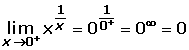
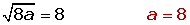

Continuity Worksheet
1Study the following functions and determine if they are continuous. If not, state where the discontinuities exist and what type they are:
1
2
3
4
5
6
2Determine if the following function is continuous at x = 0.
3Determine if the following function is continuous on (0,3). If not, state where the discontinuities exist and what type they are:
4Are the following functions continuous at x = 0?
1
2
5Given the function:
1 Prove that f(x) is not continuous at x = 5.
2Is there a continuous function which coincides with f(x) for all values with the exception x = 5? If so, determine the function.
6Determine if the following function is continuous. If not, state where the discontinuities exist or why the function is not continuous:
7Determine if the following function is continuous: f(x) = x · sgn x.
8Determine if the following function is continuous at x = 0.

9Determine the value of a to make the following function continuous.
10The function defined by:
is continuous on [0, ∞).
Determine the value of a that would make this statement true.
1
Study the following functions and determine if they are continuous. If not, state where the discontinuities exist:
1
The function is continuous at all points of its domain.
D = R − {−2,2}
The function has two points of discontinuity at x = −2 and x = 2.
2
The function is continuous at R with the exception of the values that annul the denominator. If this is equalled to zero and the equation is solved, the discontinuity points will be obtained.
x = −3; and by solving the quadratic equation: x=2−√3 and x=2+√3 are also obtained
The function has three points of discontinuity at x = −3, x = 2−√3 and x = 2+√3
3
The function is continuous.
4
The function has a jump discontinuity at x = 0 .
5
The function has a jump discontinuity at x = 1 .
6
The function has a jump discontinuity at x = 1/2 .
2
Determine if the following function is continuous at x = 0.
f(0)=0

At x = 0, there is an essential discontinuity.
3
Determine if the following function is continuous on (0,3). If not, state where the discontinuities exist and what type they are:
At x = 1, there is a jump discontinuity.
At x = 2, there is a jump discontinuity.
4
Are the following functions continuous at x = 0?
1

The function is continuous at x = 0.
2

At x = 0, there is an essential discontinuity.
5
Given the function:
1 Prove that f(x) is not continuous at x = 5.
f(5) = 0.
Solve the indeterminate form.
f (x) is not continuous at x = 5 because:
2Is there a continuous function which coincides with f(x) for all values with the exception x = 5? If so, determine the function.
If the function would be continuous, then the function is redefined:
6
Determine if the following function is continuous. If not, state where the discontinuities exist or why the function is not continuous:
The function f(x) is continuous for x ≠ 0. Therefore, study the continuity at x = 0.

The function is not continuous at x = 0, because it is defined at that point.
7
Determine if the following function is continuous: f(x) = x · sgn x.

The function is continuous.
8
Determine if the following function is continuous at x = 0:
The function is bounded by . therefore takes place:
, since any number multiplied by zero gives zero.
As f(0) = 0.
The function is continuous.
9
Determine the value of a to make the following function continuous:
10
The function defined by:
is continuous on [0, ∞).
Determine the value of a that would make this statement true.
